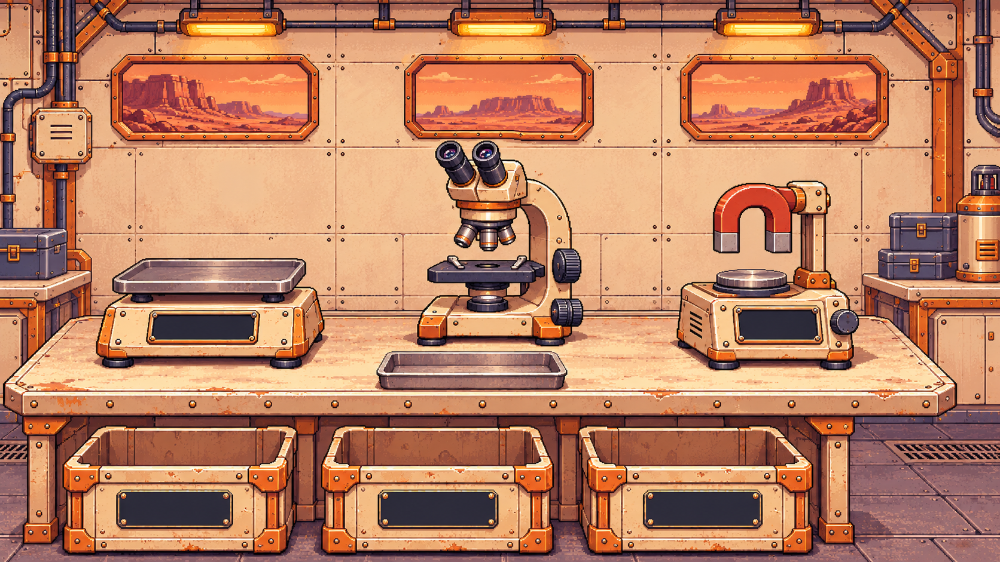

MARS HABITAT · GEOLOGY LAB
Rock Detectives
Use the tools. Match the clues. Sort the rock.
Start with any tool. All samples have the same volume.
SAMPLES SORTED0 / 3
○ SCALE○ SCOPE○ MAGNET

SAMPLE A · 100 cm³
MISSION COMPLETE
Samples sorted!
You weighed, examined and tested all three rocks.
Your field notes are complete!